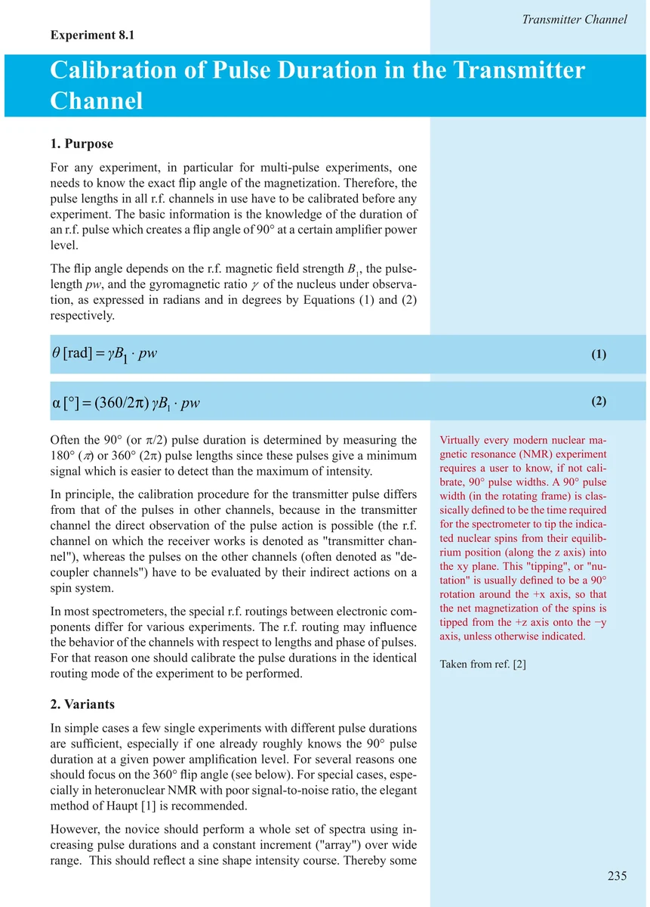
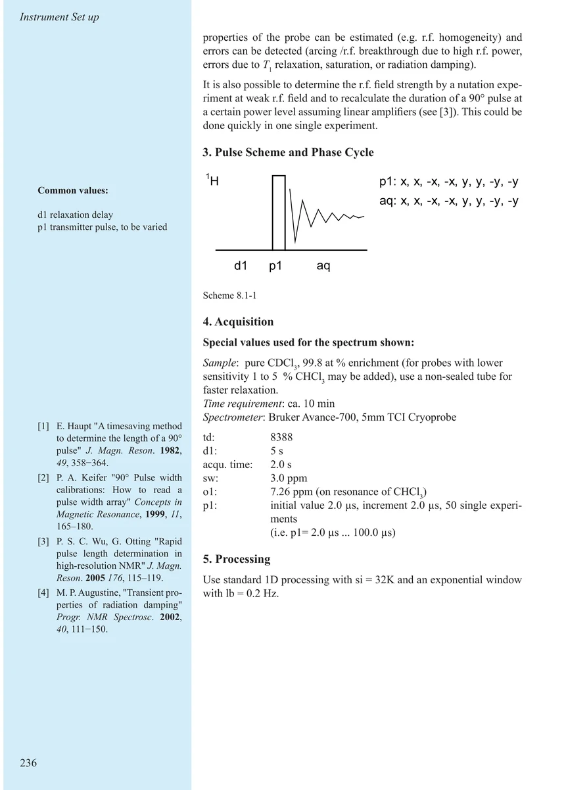
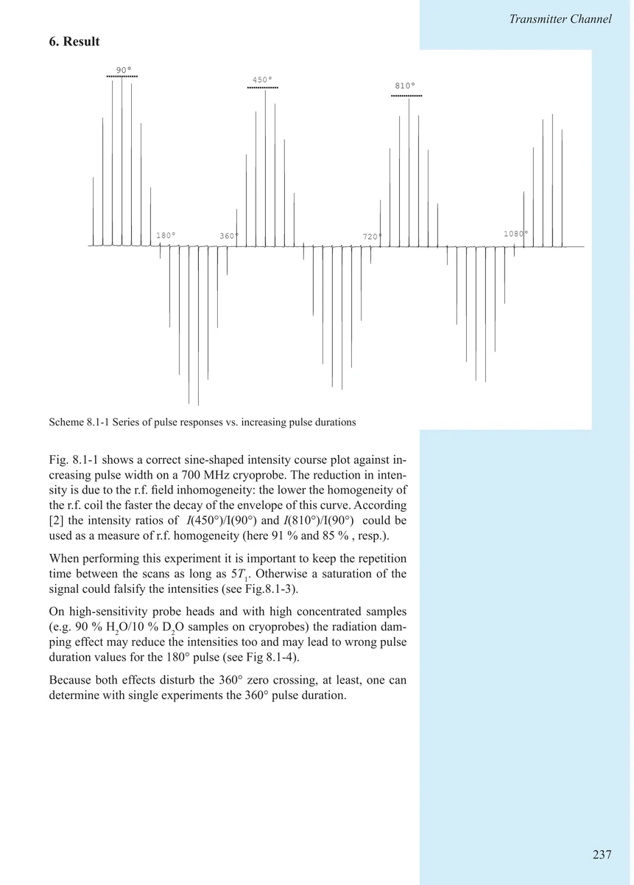
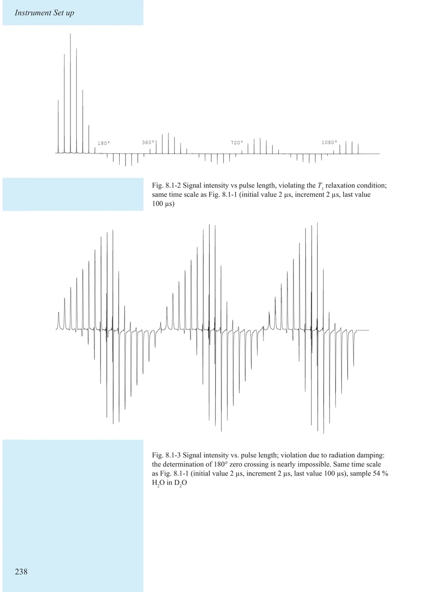
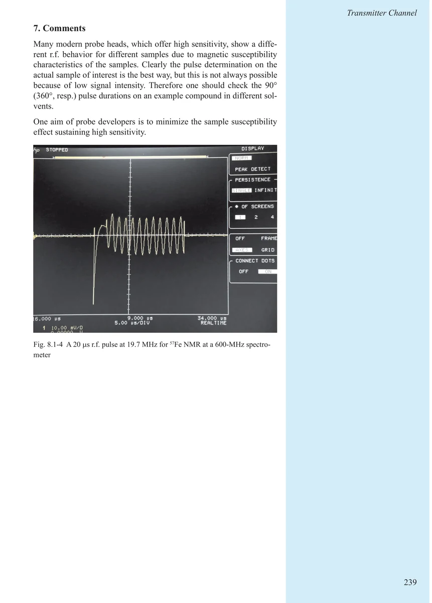
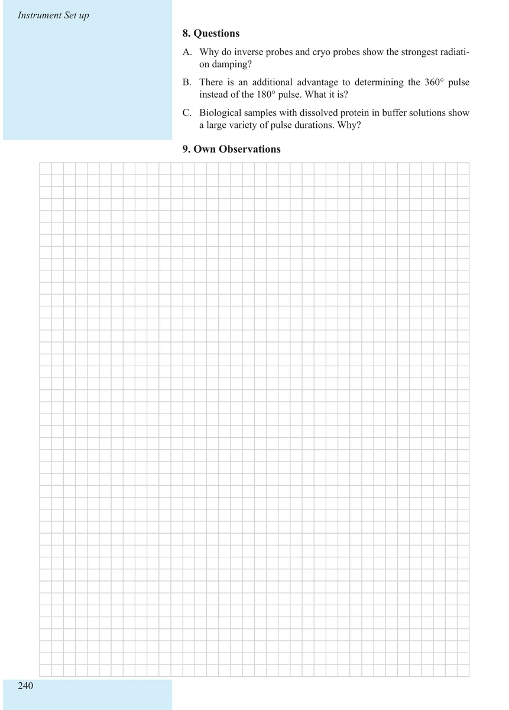

Item 8.1
Calibration of Pulse Duration in the Transmitter Channel
发射通道脉冲宽度校准
PDF 245–250 · 原书 235–240 · Maintenance and Calibration






核磁共振实验方法、脉冲序列与谱图实践
Item 8.1
发射通道脉冲宽度校准
PDF 245–250 · 原书 235–240 · Maintenance and Calibration





